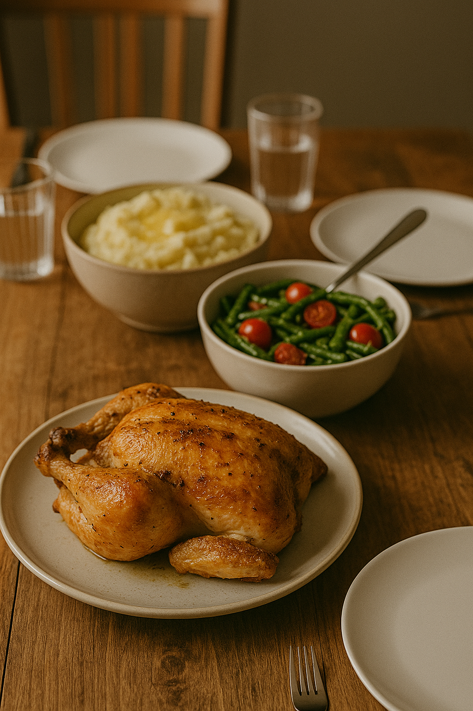

Three simple cards for reading, gardening, and cooking — with space for photos and captions.
Reading. Historical fiction to relax and learn from the past.Gardening. Growing from seed to harvest — patience and peace.

Cooking. Meals that bring family together.